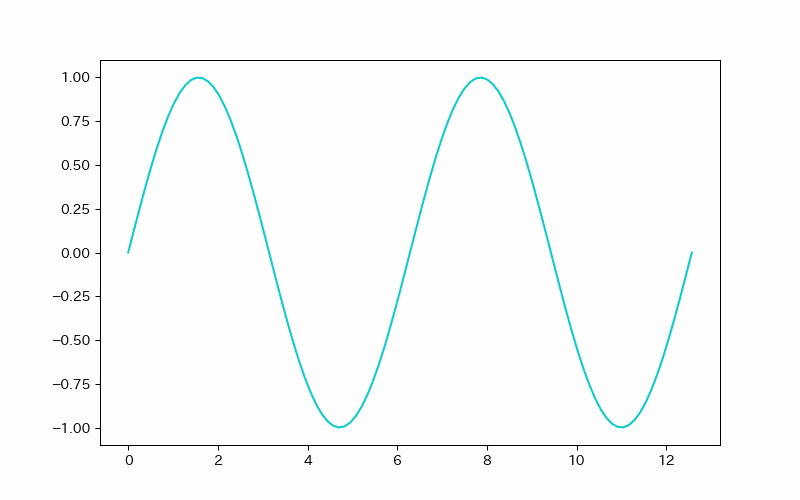

まずは y = sin(x+t) のグラフをアニメーションにして描画し、それにコードを加筆していく形で紹介する。
copy
copied!
plot_anime.py
import numpy as np
import matplotlib.pyplot as plt
import matplotlib.animation as animation
fig = plt.figure(figsize=(8, 5))
ax = fig.add_subplot(111)
lim = 50
xs = np.linspace(0, 4*np.pi, 100)
images = []
for i in range(lim):
theta = i*2*np.pi/lim
ys = np.sin(xs+theta)
image = ax.plot(xs, ys, c="#11cccc")
images.append(image)
anime = animation.ArtistAnimation(fig, images, interval=40, blit=True, repeat_delay=0)
anime.save("sin.gif", writer="pillow")
plt.show()
import matplotlib.pyplot as plt
import matplotlib.animation as animation
fig = plt.figure(figsize=(8, 5))
ax = fig.add_subplot(111)
lim = 50
xs = np.linspace(0, 4*np.pi, 100)
images = []
for i in range(lim):
theta = i*2*np.pi/lim
ys = np.sin(xs+theta)
image = ax.plot(xs, ys, c="#11cccc")
images.append(image)
anime = animation.ArtistAnimation(fig, images, interval=40, blit=True, repeat_delay=0)
anime.save("sin.gif", writer="pillow")
plt.show()
実行結果：
